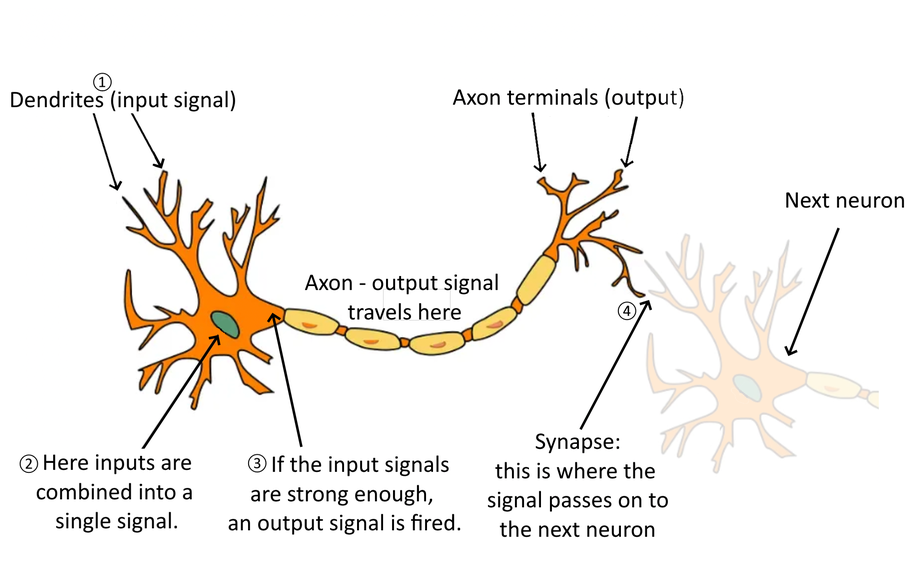
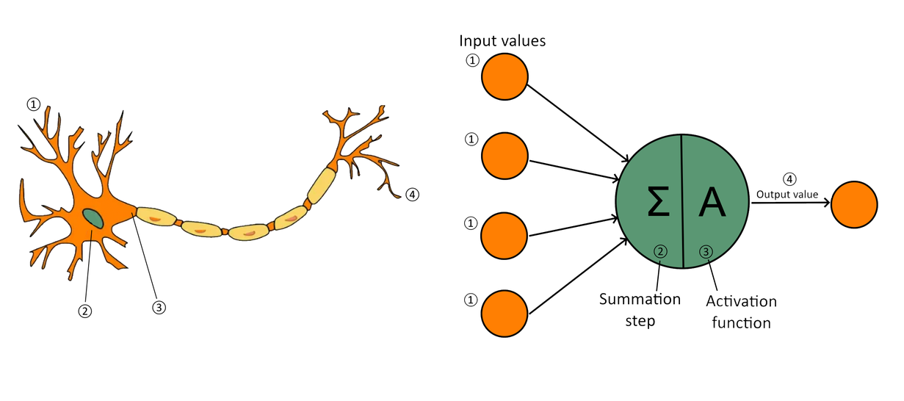
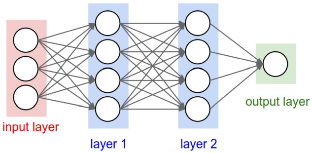
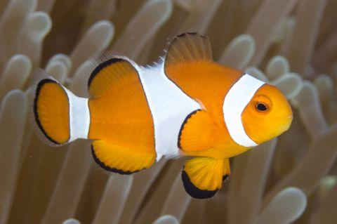
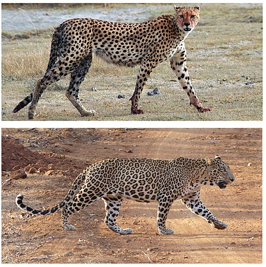
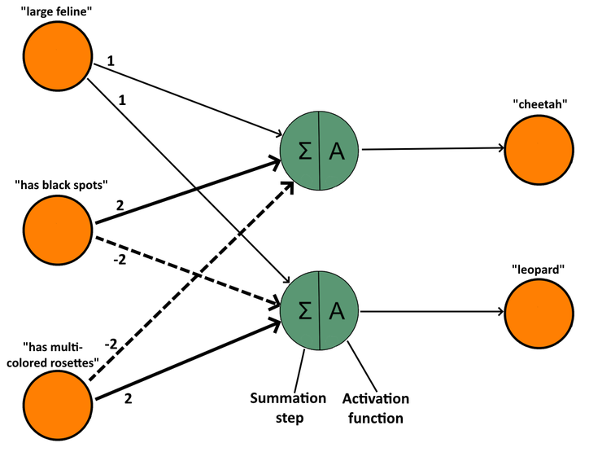
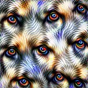
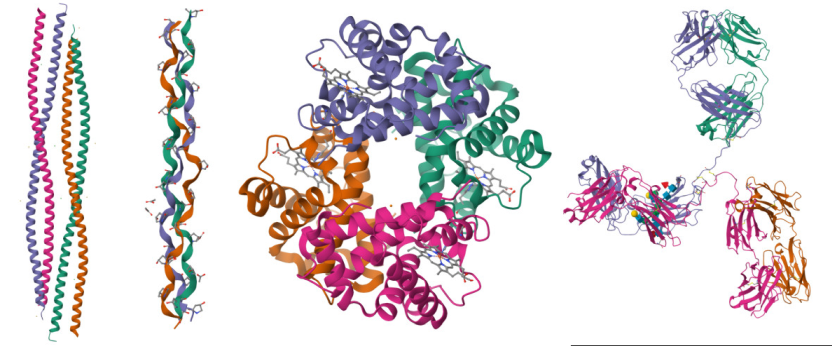

Where is AI heading - part 2/4: Narrow AI
Reading time: ~25 minutes.
In a very broad sense, AI models can be divided into two categories:
narrow AI models, which perform one (or a few) specific functions;
general-purpose AI models, which are intended to perform a variety of tasks.
To give a concrete example, any modern chatbot (Large Language Model, or LLM) is a general-purpose system (regardless of how capable it is). An example of a narrow AI system would be an image classifier model, which has one purpose only - it takes images as input and classifies them based on what is present in the image.
In this post, we will focus on narrow AI models. One may ask: if LLMs are everywhere nowadays, why should we care about narrow AI?
First of all, for many people the word “AI” has become synonymous with LLMs. I think that this is rather problematic and makes it extremely hard to have meaningful public discourse about the risks and benefits of AI systems and their regulation. A lot of valid and difficult questions about LLMs (in particular about their safety and alignment) are either non-issues or are much milder for more narrow AI systems.
Energy efficiency is another major factor. To see why, let's compare how much energy (in joules) it takes to identify the contents of a single image:
For a typical narrow AI system, the energy usage falls in the range of 0.05-2 joules (more details) - the equivalent of a household LED lightbulb shining for less than 0.1 seconds (essentially, one blink of an LED).
For an LLM, the same classification task could be ~200-300 joules (more details). If the answer is given by the LLM in conversational format, the answer can easily be more than 10 times longer, bringing the energy usage to over 3000 joules - the LED lightbulb shining for 4 minutes straight.
The difference is mind-blowing: using an LLM for the same task uses ~3000 times more energy!
For those reasons, I think everyone should keep in mind that:
In general, whenever there is a narrow AI model that solves a given task as well as a general-purpose AI model, I recommend using the narrow AI model.
Crucially, narrow AI systems have produced (and continue to produce!) many impressive results. In the section What has deep learning given us? we will look into several examples from Google DeepMind that predate the creation of modern chatbots. Those examples include:
An AI model that plays the game of Go, which was considered to be nearly impossible for computers to master, since it relies largely on intuition.
An AI model that can accurately predict the 3D structure of proteins, which was a major open area of research for 50 years.
This last example may honestly be characterized (as of today, in 2026) as the greatest biological breakthrough ever achieved by an AI system. In 2024, it earned its creators a Nobel Prize in Chemistry.
To understand how such AI models work, we can follow in the footsteps of early AI researchers, who took inspiration from human brain and how we see the world.
Inspiration for AI - human brains
For a long time, humankind has been fascinated by questions like:
What is intelligence?
How do our brains work?
Is it possible to artificially imitate the inner workings of the brain?
What are the fundamental building blocks of the brain?
How do these building blocks function together to give rise to such complex phenomena as vision, smell, or logic?
Cells called neurons play an important role in answering all of the questions above. In the brain, billions of neurons form complicated networks that encode memories, shape personalities, drive decisions, and process the sensations of touch, taste, sight, smell, and sound (for a deeper overview of this topic, read more at Khan Academy).
Some interesting facts about neurons in our brains and bodies:
An adult human brain contains approximately 80 billion neurons.
A single neuron may be connected to 1000-10'000 other neurons.
The longest neuron in the human body can be over a meter long (from the bottom of the spine to toes). However, most neurons in the brain are less than a millimeter in length.
For example, human vision is made possible by a large number of neurons working together. Although neural networks consisting of hundreds of millions neurons are hard to study, each individual neuron by itself is (comparatively speaking) much simpler.
In simple terms, neurons work like this:
The following diagram shows how a neuron actually looks like.

A biological neuron. Source: Clker-Free-Vector-Images via Pixabay (modified).
Scientists soon realized that while a brain with billions of neurons is bafflingly complex, an individual neuron is surprisingly simple to describe mathematically. Building on that idea, Frank Rosenblatt came up in 1957 with the idea of a perceptron, a simplified mathematical model of a neuron:
The following image shows this mathematical model side by side with a biological neuron.

Biological neuron vs artificial neuron. Source: left - same as the previous image (modified); right - by author.
A technical remark. In modern neural networks, the step is usually done a bit differently than in the perceptron model. The exact method for doing so (the activation function) differs between various AI models. For more examples and mathematical details, consult here.
The same basic mathematical structure for neurons powers the vast majority of neural networks used today (including LLMs). Taken individually, a neuron (either biological or artificial) is not particularly powerful; combine them into networks consisting of millions, and surprising behaviors start to emerge if they are suitably trained (more about this below).
When the perceptron was invented in 1957, it attracted considerable amount of research interest. However, perceptrons also had their limitations. In the next sections, we will see what those were and how the science of neural networks has evolved over time.
Human vision as a neural network
A fundamental limitation of the perceptron model was that it was a single-layer network - meaning there were no intermediate layers of neurons between the inputs and the output. Contrast that with human vision, where there are ~10 layers of neurons, from the cells receiving the light impulses to the neurons in the brain that correspond to a concept, like seeing a cat.
First, the light hits the cells in the eye; the raw image captured by those cells is heavily compressed (~100x) before it even leaves the eye.
After that, the information is sent via the optic nerve to the brain - where a chain of neural layers gradually turns raw signals into meaning:
Layer 1: organizes visual information;
Layer 2: detects low-level features: orientation, edges, and lines;
Layer 3: combines simple edges into basic shapes and textures;
Layer 4: processes complex shapes and geometric forms;
Layer 5: detects whole objects, faces, and abstract concepts, e.g., recognizing a dog, a car, or a number.
Similar principles also apply for AI systems:
As information passes through the layers of the neural network, the subsequent layers represent increasingly complex patterns.
The number of layers in an AI model must be sufficient so that complex features or concepts can be represented. However, increasing the number of layers also increases the training time.
The next diagram shows a toy example of a 3-layer neural network (the input layer is not counted). On the left (red) is an input layer; it is followed by multiple hidden layers. The network concludes with an output layer, containing a single neuron in this example (green). Of course, this is just a toy example and neural networks nowadays used for practical applications contain more layers and a lot more neurons (typically millions of neurons, or more).

A simplified illustration of a deep neural network. Source: Terra Incognita (modified).
Progress in AI research
Now that we have gained a grain of intuition about how the neural networks can represent complex patterns and relations, let's travel back in time and continue where we left off.
1960s
Early research into neural networks (until the 1960s) encountered significant challenges. As mentioned above, those neural networks were primarily confined to single-layer architectures. Also, the research initially lacked a strong theoretical foundation. In 1969, a book called Perceptrons demonstrated that single-layer networks are fundamentally limited (mathematical explanation), and noted that there is no known efficient way to train multi-layer networks.
After that, there were several periods when the interest in AI research waned considerably. Such time periods are now called “AI winters” (see here for more exact historical background). However, there were dedicated researchers who kept pushing the boundaries.
1980s
A major breakthrough came in the 1980s when Geoffrey Hinton helped demonstrate how a technique called backpropagation (a clever mathematical way of applying corrective feedback to the layers in reverse order) could be used to efficiently train multi-layer networks. Nowadays, this approach to multi-layer training is known as deep learning. Yann LeCun then took the backpropagation algorithm and applied it to the task of recognizing handwritten digits. For this, he used a type of neural net called a convolutional neural network (CNN).
Remember those concepts (backpropagation, deep learning, CNN) - throughout this blog post, we will come back several times to models based on the CNN architecture, since CNN models apply to visual data, which makes them great for providing intuitively understandable examples.
After some progress had been made in the 1980s and 1990s, progress stalled again. Looking back, it is clear that one of the reasons was that the computers used then just did not have sufficient computational capabilities to train practically useful models. AI researchers tended to focus on other types of systems, for example carefully hand-crafted expert systems which require large amounts of hand-coded expert knowledge (read more here). However, there were three notable figures - Yoshua Bengio, Geoffrey Hinton and Yann LeCun, who kept the flame of curiosity regarding deep learning alive even when other researchers moved on. Over the decades, they collectively supervised 50+ PhD students on various topics.
2010s
By the late 2000s, deep learning was seen by the industry mostly as a curious historical relic. A breakthrough came from an unexpected place. A researcher named Fei-Fei Li had been working on vision models for several years and had developed an intuition that making progress would require a much larger, high-quality training dataset. She was also inspired by an estimate by vision scientist Irving Biederman - that the average person recognizes roughly 30'000 different kinds of objects. With just a few colleagues, limited funding, 2 years of hard work, and a lot of ingenuity, she managed to compile a dataset of 14 million images, carefully annotated into 22'000 categories, which she named ImageNet. She released it in 2009. To help popularize it, she also launched the ImageNet competition, where AI systems could compete with each other in the image classification task.
In 2010 and 2011, winners of the ImageNet competition used techniques that were only slight improvements from the state of the art (mostly expert systems). In 2012, Alex Krizhevsky, Ilya Sutskever, and Geoffrey Hinton won the ImageNet competition using an AI system called AlexNet, which was an example of a Convolutional Neural Network (CNN) - a model architecture that had waited for its time for several decades. It crushed the competition with an error rate of just 15% (winners of 2010 and 2011 had demonstrated error rates almost twice as large). At the same time, the training time for AlexNet was mere days (instead of months, which would have been expected at the time). This event was a huge catalyst for the following boom in deep learning (and AI in general).
So, why had the time to shine now arrived for CNNs, several decades later? First of all, the computational capability of computers had improved enormously during those decades. Secondly, the researchers behind AlexNet managed to use GPU chips to efficiently parallelize the training process.
After the competition, many people wanted to know answers to questions such as:
How did AlexNet manage to beat the hand-crafted expert systems by such a large margin?
Furthermore, how can a model like CNN even succeed at such a complicated task as image classification?
The scientists showed that after successful training, a CNN model has a property that we already observed for human brains: as information moves through subsequent layers, these layers start to represent increasingly complex concepts. Consider how a CNN model processes an image of a clownfish (below):
earlier layers detect edges and colors (e.g., the edge of an orange stripe);
following layers start to combine them into texture-like feature groups (e.g., an orange-white striped pattern);
later layers assemble whole object parts (e.g., the fin of a clownfish);
final layers combine the parts and their position & orientation to detect the object class (a clownfish).
Thus, the CNNs manage to utilize one of the central pillars of intelligence: representing complex relationships via a combination of simpler relationships.
A remark. The AlexNet model has 8 layers and approximately 60 million parameters (weights).

What is a weight?
Before we can discuss AI models and their training processes, we need a solid understanding of the concept of a weight in an AI model. A weight is a number (positive, negative, or 0) that shows the strength of the connection between two neurons.
Image classifiers like CNNs are excellent for illustrating such abstract concepts. Consider a model that analyzes an image and identifies the animal species in it. To make things more interesting, we consider two animals that are very similar in some ways, but rather different in another way: a cheetah and a leopard.
Judging by the body outline alone, the cheetah and leopard are remarkably similar. Both of them are big cats with a similar size and a feline silhouette. The distinguishing factor is their coat – cheetahs have black spots on their fur and leopards have multi-colored rosettes.

Cheetah (above) vs leopard (below). Source: Wikimedia Commons (cropped).
The last layer of the image classification model usually contains one neuron for each of the possible image classes (in this case, the animals). We concentrate on two neurons in that last layer that correspond to the classification results “cheetah” and “leopard”. It is then reasonable to expect that the preceding layer of the model will contain neurons that represent:
concepts that apply to both of those animals (e.g. “large feline”);
concepts that distinguish those animals from each other (e.g. “black spots”, or “multi-colored rosettes”).
On the image below, weights (connections between neurons) are depicted as arrows. Bolder arrows correspond to strong associations (e.g. “has black spots” \(\rightarrow\) “cheetah”). Thinner arrows correspond to somewhat weaker associations (e.g. “large feline” \(\rightarrow\) “cheetah”). Dashed arrows represent negative weights – that is, factors that block (inhibit) the next neuron from activating (e.g. “multi-colored rosettes” \(\not\rightarrow\) “cheetah”). The numerical values of weights are written above the arrows.

Simplified diagram of neurons for detecting cheetahs and leopards (image by author).
Of course, this is just a toy example - in actual neural networks, each individual classification decision receives input signals from hundreds or thousands of different neurons in the preceding layer, each of them playing a small part in the decision process.
Human brains also make use of inhibitory signals in various contexts, including vision. If you are interested, click on the following box to expand it and learn more - it turns out that this inhibition mechanism is actually the cause for some common optical illusions!
The process of learning
At the moment of birth, a baby already has almost all of the neurons that an adult will have. Learning is not about producing new neurons; rather, it happens as new connections (synapses) form between existing neurons, unused ones are pruned away (removed), and the strengths of those connections change.
An analogous mechanism drives learning in AI.
The word “learning” has a very specific meaning in machine learning: it means that during the training process some weights are strengthened and some are weakened. The mathematical operations themselves connecting the previous layer with the next one do not change; only the weights do. This begs the question: how does the training process select the weights to change to gradually produce a useful AI model such as AlexNet?
Remark. Keep in mind that computers do not “see” the image the same way as humans do. Instead, they see an image as a grid of pixels, and each pixel is just 3 numbers for the AI model - corresponding to the amount of red, green, and blue in that pixel. In that sense, for AI the whole image is just a grid of numbers.
As an initial step, a model is chosen with all of the weights being completely random in a given range. In the example of AlexNet, this means that the model will produce completely random outputs (e.g., classifying an image of random noise as an elephant). Now, at each step, the following happens:
A small batch of images (e.g., 128 images in the case of AlexNet) is chosen randomly.
For each of the images in that batch, prediction error is calculated (based on whether the predictions agree with the labels assigned by human digitizers).
Using clever mathematical techniques (such as backpropagation and chain rule), it is calculated for each weight how much changing that specific weight in a positive/negative direction would have affected the prediction error of the model.
Each weight is changed by a tiny amount in the direction (calculated in the previous step) that most improves the predictions.
This process is then repeated millions of times; if everything goes as expected, the prediction errors should start to fall and the model should learn to recognize features and classify images correctly and reliably.
Remark. Mathematically, the hard part is calculating how changing each specific weight would have affected the resulting prediction error, since each layer also affects each subsequent layer as well. Remember that a single image classification model will have tens or hundreds of millions of neurons, so the efficiency of this calculation is crucial. This is the problem that the technique of backpropagation solved. Recall from the historical overview above that backpropagation was invented only in the 1980s after several decades of research into this area.
Let's walk through an example of how this training process could start. The training process considers the first image of the first batch, which happens to depict a slightly cloudy sky. Since the network has been initialized randomly, there will be neurons in the earlier layers which respond to blue pixels; and there will be neurons in the later layers that eventually lead to the image class “sky” being activated. Since we have just started training, the image is equally likely to be classified as “sky” or “strawberry”. Since the number of neurons is large, there will be (just by chance) some neurons that react to the color blue and push the classification toward “sky”. So if the given batch contains images of the sky, those weights that support this relationship (“blue pixels” \(\rightarrow\) “image could depict the sky”) are slightly strengthened. At the same time, weights representing alternative potential relationships (e.g., “blue pixels” \(\rightarrow\) “image could depict a strawberry”) are slightly weakened. Over thousands of iterations, such relationships take form and become functional.
Of course, this is just the easiest type of heuristic one can have. In order to become truly effective at classifying images (e.g., images of the sky), the model has to learn (i.e., find corresponding weights):
to detect areas of same color, edges, lines, orientation of features;
to understand how simple edges combine into basic edges and textures;
to how complex shapes consist of simpler shapes and geometric forms.
Take the the example of detecting a clownfish. Let's assume that model has learned that clownfish have orange and white stripes on them. The detection capability of the model will increase if it also starts making sure that those orange and white stripes are next to each other and alternate in color. For this to happen, some neurons in the later layers have to specialize to respond to the positional information of those shapes (orange/white stripes) that were detected in the preceding layers.
I recommend to take a small pause here and think about some specific object in the world and reflect on how do you, as a human, recognize it in an image. Try to think of the features that define it and how the model could learn to gradually detect it via making millions of small improvement steps.
The crucial question is whether there is a sufficient amount of positive and negative examples in the data set: the model may take “shortcuts” if the input data does not punish for it. There is a famous study that showed that image detection models often rely extensively on the environmental context for detecting animals (concrete example: cows are usually photographed on grassy pastures). If there is an image of a cow in a new context (e.g., cow on a paved road, or cow on a beach), the model will fail to classify it as a cow. What has happened is that instead of learning the complex anatomical features of a cow (ears, muzzle, body shape), the model has learned a simpler rule: “somewhat cow-like animal on a green pasture \(\rightarrow\) cow”. This is an example of what is called shortcut learning.
The solution is to enrich the dataset of images to have variation of contexts, backgrounds lighting, viewpoints and shapes. It is also useful to incorporate images taken by different photographers and camera types.
In this section, we looked at the process that AI researchers follow for producing useful AI models like AlexNet. All of those steps can be shortly summarized in the following way:
Collect sufficient input data, classified with sufficiently high accuracy.
Define the goal function (the function that tells whether the AI model is doing a good or a bad job).
Choose a model architecture (e.g., CNN).
Initialize the model with random weights.
Run the training process.
A visual explainer of a CNN model
An excellent way to understand something is to observe and tinker with how it works. In the case of AI systems, this is usually not something that is easy to do. Luckily, there is a webpage that contains a visual explainer of a CNN model. This webpage runs a CNN model called “Tiny VGG” directly in your browser, allowing to upload your own image and see the classification model crunching through it before your own eyes.
Notice that this CNN model is quite limited: it only accepts tiny images (64x64 pixels) and sorts them to one of the 10 pre-defined classes. This is intentional; first, it enables the model to run smoothly in a web browser. Secondly (and more importantly), this allows the model to be simple enough to visually illustrate what really happens at each step. Try clicking on different steps to get an intuitive understanding of what happens at various steps and how the model “sees” the image.
A word of warning, though - since my overview of the topic has been rather high-level, I have not given all of the necessary definitions for understanding CNNs. I have not explained concepts like convolutional layers, kernel layers, ReLU activations, and max pooling that are used in the visual explainer page. If you want to learn those definitions, open the collapsible accordion box below. If not, just head directly to the visual explainer page and play with the model.
How to see inside the model?
Let's consider a seemingly simple question - “do we fully understand how those models work?”
On the one hand, for a given local model, the model's architecture is fully known. Also, at any point of training, all of the weights are known and can be inspected. But there are things which are harder to assess:
What kind of patterns or capabilities has the model learned?
Which neurons are relevant or necessary for a given pattern or capability?
It is entirely possible to follow the mathematical calculations - understanding the meaning behind the weights is harder to do.
Neuroscientists face the exact same challenge when studying biological brains. If they show someone an image of a cat, they can observe which areas of the brain light up. But what specific groups of neurons were responsible for noticing the color of the fur? Which ones detected the patterns? Which ones separated the cat from the background, recognized its facial expression, or inferred its mood? Or even deeper - which neurons caused the viewer to feel an emotion based on how the cat seemed to be feeling?
Of course, both neuroscientists and AI researchers have developed techniques to overcome those issues. However, since a large part of human cognition and model capabilities are complex and emergent properties, it is not often easy to give simple and intuitive answers to such questions. For example, in the early days of modern brain research, scientists tended to make absolute statements like “each specific brain region controls just one distinct mental task”. Modern neuroscience shows that high-level intelligence emerges from interconnected, dynamic networks rather than isolated single components. In the context of AI research, this is especially a problem for investigating general-purpose models like LLMs.
In the context of image recognition models, researchers have found clever ways to visually represent the inner workings of the AI models. One of those techniques is a saliency map. It is used to high-light the pixels in the input image that were most strongly used in the process of assigning the category label - e.g., “chair” or “cow” (read more here). Recall the earlier example where detection of cows relied on detection of grass by an extensive amount. In that case, the saliency map would strongly high-light the pixels containing grass, which would inform the researchers of the problem. Researchers could then fix it by enlarging the dataset by cows in other context (e.g., on a paved road).
Example of a saliency map. Source: Jay Alammar.
There is also the technique of feature visualization for understanding what a given neuron (or a group of neurons) in the neural net reacts to. For this, an image with random noise is taken. After that, it is gradually modified so that it becomes an image that makes the previously chosen neuron(s) to be maximally active. This process is repeated for thousands of iterations. By the end of the process, the image is filled with objects that the neuron(s) react to. The end result of this process is often quite psychedelic. In the next image, we can see a feature visualisation for a group of neurons that activates for dog eyes.

Example of a feature visualisation (dog eyes). Source: Distill
This page allows to navigate through feature visualisations of a CNN model called GoogLeNet. Notice that initial layers (3a and 3b) correspond to simple textures, whereas later layers correspond to more complicated concepts. For each layer, there are visualisations that maximally excite a group of neurons (“positive channel”) and visualisations that least excite that same group of neurons (“negative channel”). More explanations can be found here.
The importance of a goal function
Above, we considered the steps in the process of obtaining a useful AI model. I would like to now focus on the step of choosing an appropriate goal function, since this step is actually rather critical for success.
There are some fields where defining a good goal functions is easier, since the fields themselves are more precisely defined and there are ways for rather directly verifying the correctness of a generated result - in mathematics, a machine-readable proof of a theorem can be verified; in programming, it is possible to verify whether the program compiles and produces the expected output for various inputs.
In some other fields it is harder to define a suitable goal function. Think of the task of writing a novel - there is no direct way to grade the quality of a machine-generated novel on the scale of 0% to 100%.
As we will see in the next blog post, this is one of the reasons that LLMs have made enormous progress in some of the fields that where previously considered the hardest hills to conquer (e.g., mathematics), while the progress has been lagging a bit more behind in some other areas. However, over time, clever techniques have been developed to address this shortcoming.
What has deep learning given us?
After AlexNet was released in 2012, the field of deep learning experienced an avalanche of renewed interest. Progress was made (using various deep learning techniques) in areas such as speech recognition, image generation, image classification, and machine translation.
One of the major sources for innovation in that time period was a company called DeepMind (founded in 2010 by Demis Hassabis, Shane Legg, and Mustafa Suleyman; acquired by Google in 2014). I would like to mention 3 areas where they successfully applied deep learning methods.
Playing 1980s computer games
When DeepMind was founded, Demis Hassabis looked for ways of expanding the technique of deep learning to a wider array of contexts. For this, computer games proved to be a useful medium.
In 2014, DeepMind published research about a model (DQN - “deep Q-learning”) that could learn to play a wide range of classical 1980s computer games (such as Pong, Breakout or Space Invaders) without having any prior description about how those games work. Instead, they used deep learning methods, letting the model learn by trying to play the games - providing the game's screen as an input (and the game's score) to the model at every frame. Model could only interact with the game by choosing which keys to press.
Initially, the model starts out by “pressing” random keys at times. Throughout the training, models accidentally stumble on tactics which increase the chances of achieving a high score and the corresponding weights in the network get reinforced. In machine learning, this is called reinforcement learning - the network takes actions and is scored based on the result (the score, in this case).
This is a crucial point that distinguishes it from learning that relies on pre-defined ground truth - which is called supervised learning. The model AlexNet, which we considered above, is an example of supervised learning. Using supervised learning in the context of Atari games would be impossible - it would mean that humans would have to manually judge a large portion of all possible game states. In that sense, reinforcement learning is much more flexible - it just requires that there exists some well defined goal function (like the game's score).
This also means that in the case of reinforcement learning, the model might find solutions that humans did not anticipate or were not aware of. Here is a video of how this happened in the game of Breakout - model discovered a nice strategy that the team in DeepMind had not been aware of.
AlphaGo
After the dramatic chess matches between Garry Kasparov and a computer algorithm named Deep Blue (developed by IBM) in 1996 and 1997, chess engines continued to improve. Chess players slowly came to accept that machines are and will remain superior to human players. The game of Go, however, was a different story - until 2015, the strongest computer programs played at intermediate level at best. The board size is huge (19x19) and the number of possible games is staggering (that number has 173 digits). The difference with chess is that it is much harder to assess a position and say who is in the lead; the advantages become clear only in the end-game, where the score is solidified. Playing the game requires relying significantly more on one's intuition and experience.
DeepMind developed AlphaGo using a combination of machine learning and tree search techniques, combined with extensive training, both from human and computer play. It is fascinating that the models that they trained for playing Go were CNNs - the same architecture that AlexNet used. However, this time the inputs to the models were states of Go games, not images.
In order to not make this post any longer than strictly necessary, I leave the choice to you - feel free to read the technical details of how AlphaGo works at a technical level; or skip it.
In 2016, AlphaGo played a match against Lee Sedol, one of the best Go players in the world - and won 4:1. There is an excellent movie on YouTube which captures the dramatic events and the effect it had on how Go is played. It also gives some nice visual explanations of the technology behind the breakthrough.
AlphaFold
In recent years, leaders of frontier labs have talked a lot about how LLMs could cure cancer in the future. In a longer time span, this may be true; but in a shorter time span one has to keep in mind that while AI can help with suggesting new drug candidates or biological experiments, some of the steps can not be so easily side-stepped, like clinical testing and obtaining regulatory approval for drugs.
At the same time, we already have one incredible biological breakthrough in an area that had seen only limited progress in 50 years - protein folding. The problem's statement sounds innocent enough: given a protein, what 3D shape does this protein molecule take? Proteins consist of 22 different amino acids; those can be thought of as “universal LEGO bricks” that the body uses for various purposes. The role of the proteins is largely determined by the 3D shape that they take (which in turn is determined by which amino acids repel and attract each other). Here are some examples for illustrative purposes:
keratin - long rod-like shape - important component of hair;
collagen - long triple helix shape - gives strength to bones, tendons, and ligaments;
hemoglobin (a protein that additionally contains iron) - a basket-like shape - transports oxygen into cells;
antibodies (immunoglobulin) - Y-shape - each antibody attaches to a different target (e.g., a microbe or an infected cell) so that the immune system knows to attack that target.

3D structures of keratin, collagen, hemoglobin, and immunoglobulin. Source: RCSB Protein Data Bank
Protein folding was an active research area since 1971, and by end of 2022, scientists had identified 3D shapes for 200 thousand proteins. Previously, it could take a student their whole PhD study to determine the 3D structure of a single protein. In 2018, DeepMind introduced a specialized deep learning model called AlphaFold for the protein folding problem, and it turned out to be hugely successful. AlphaFold predicts the 3D structure that the protein takes, which can then be verified both mathematically and by physical observation. Throughout the years, the precision of their AI models continued to improve. By 2022, they had achieved a milestone - they had mapped the 3D shape of 200 million proteins, virtually every protein known to exist in nature. They had taken what took people years and tens of thousands of dollars via experimental methods, and turned it into something that the AI could do in seconds for a negligible cost.
For this achievement, Demis Hassabis and John Jumper were awarded the Nobel Prize in Chemistry for AlphaFold in October 2024.
There is an excellent video overview from Veritaserium channel about AlphaFold. Alternatively, one can read technical details from DeepMind blog.
Conclusion
The main takeaways I want to leave to you, the reader:
Although AI systems have been originally been built on ideas borrowed from human brains, they are still very much different. And it is not necessary for AI systems to blindly imitate human brains.
Learning is possible where there is a clear goal function towards which to gradually optimize. Sometimes just defining a good goal function is already a significant step towards success.
There exists a large variety of different AI systems, both narrow and general-purpose. Being able to distinguish between them is a starting point for any public discussion about both the benefits and risks.
AI models are not magic - by learning the basic principles that they operate on, it is possible to have much more meaningful and deeper conversations. This is also why it is crucial for politicians and lawmakers to educate themselves on the topic.
Although we covered a lot of ground in this post, this overview really just scratches the surface of all the research done over the decades into various AI systems. In the next blog post, we will focus on generative AI (including LLMs), the transformer architecture, and how it is different from the preceding AI architectures.
To recognize their contribution to this field, Yoshua Bengio, Geoffrey Hinton and Yann LeCun were awarded the 2018 Turing Award for:
conceptual and engineering breakthroughs that have made deep neural networks a critical component of computing.